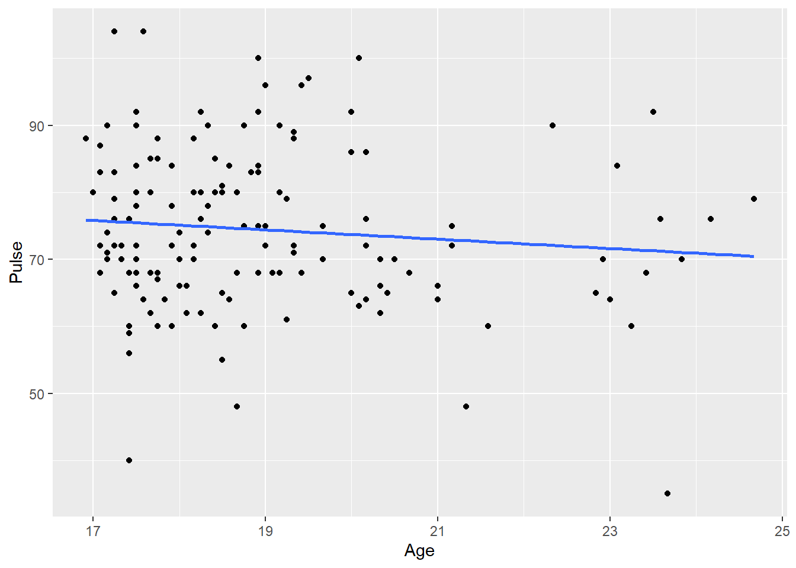
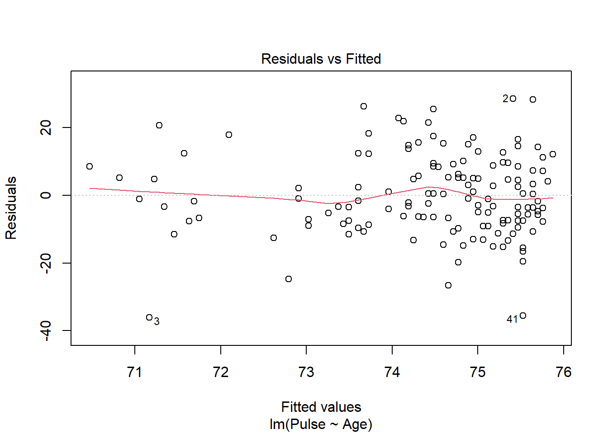
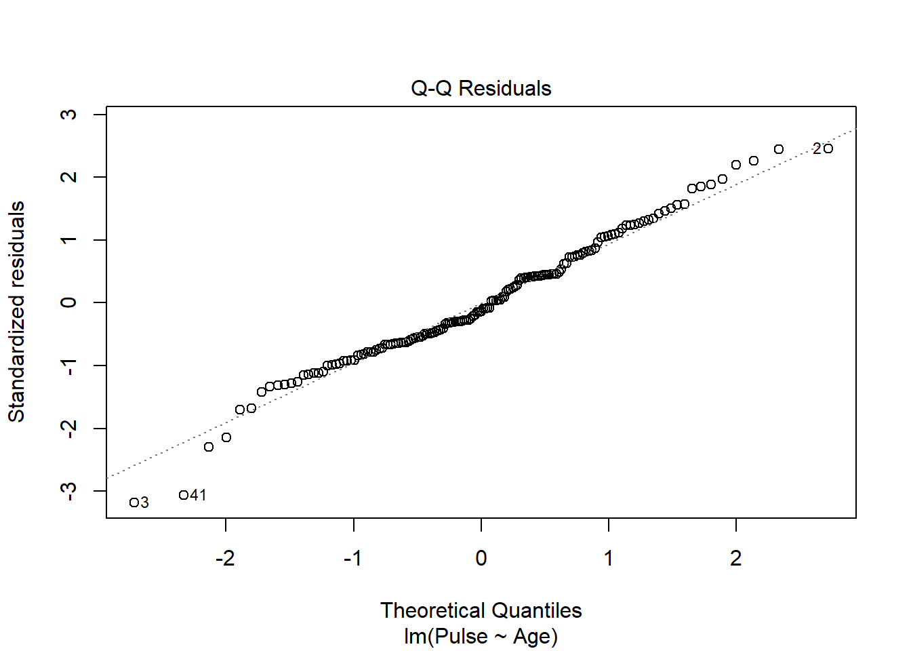
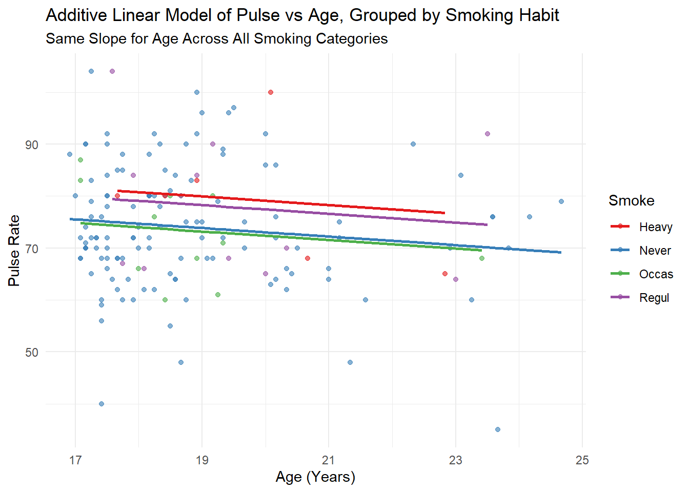
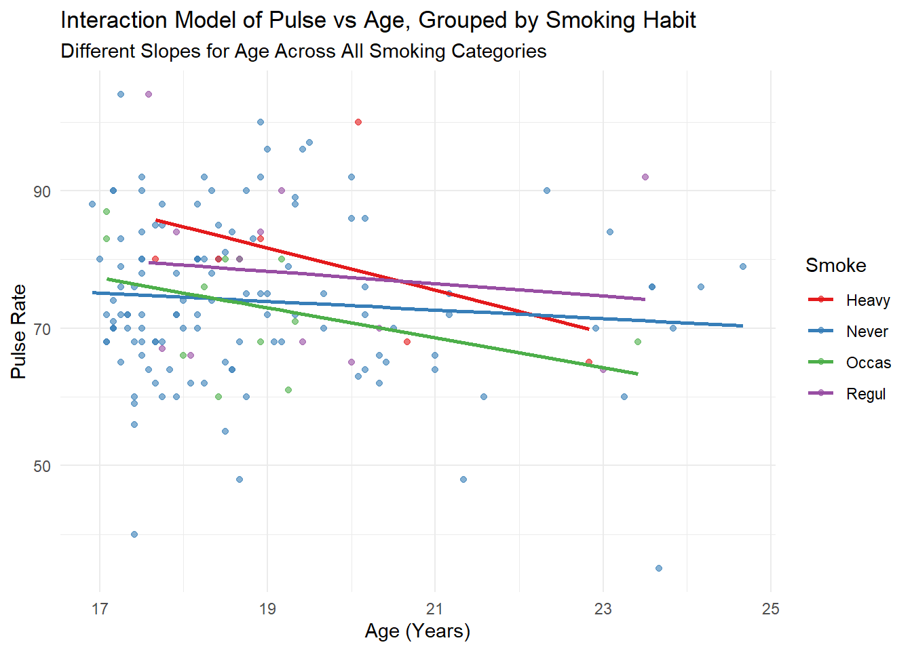

cor
1 -0.1069597Homework-4
Note
Because you still have multiple graded assessments due before the final exam, this is an OPTIONAL homework assignment to help you study for the final exam. This is not required, and you do NOT need to turn this in.
If you turn this assignment in by 12/1 at 11:59pm, you will earn +3 extra credit points towards the final exam. Partial extra credit can not be earned. You must complete this assignment in its entirety to earn extra credit points. Note: You can not earn more than a 100% on the final exam.
Instructions on how to start
This is a hand written assignment. Please label your questions as clearly as possible and put your name at the top of your assignment. You may work together on homework, but you are required to turn in your individual work. Unless otherwise specified, please give your answers to 2 decimal places.
Show your work. I am happy to assign partial credit that you earn, but this can not be done if you do not show your work.
Instructions on how to turn your homework in
You will turn in your assignment on Gradescope. A Gradescope link to Homework-1 can be found on Moodle. Here is a short video by Gradescope on how to turn in your assignment: Video. Please submit a PDF. All other file types will not be graded. As the video says, there are several phone apps you can use to create a PDF of your work. You can also you a scanner. If you are having trouble creating a PDF of your work, please reach out to me and we will have a conversation.
Data
For this homework, we are going to being using the survey data set. These data contains the responses of 237 Statistics I students at the University of Adelaide to a number of questions. You can find the variable names and descriptions by clicking the link here. We are going to use a cleaned up data set that only looks at students younger than 25 years old.
Before you start
Sometimes software output can be difficult to read. For example, 7.72e- 1 should be read as 0.772. The e- 1 means move the decimal place over 1.
Exercise 1
In this exercise, we are going to investigate the relationship between a student’s age and their Pulse. For this question, use Pulse as our response variable, and Age as our explanatory variable.
Justify, in as much detail as possible, why we can’t use difference in means methodology to analyze these data.
The correlation coefficient can be seen below.
Report the proper noation for the correlation coefficient AND write out the appropriate interpretation of your correlation coefficient in part b by selecting the most appropriate interpreation below.
– There is a strong positive linear relationship between Age and Pulse.
– There is a weak positive linear relationship between Age and Pulse.
– There is a strong negative linear relationship between Age and Pulse.
– There is a weak negative linear relationsihp between Age and Pulse.
– There is a strong negative relationship between Age and Pulse.
– There is a weak negative relationship between Age and Pulse.
- You can see the scatterplot with our line of best fit below that models the linear relationship between Pulse and Age. You can also see the estimated coefficients for the line of best fit below.

# A tibble: 2 × 5
term estimate std.error statistic p.value
<chr> <dbl> <dbl> <dbl> <dbl>
1 (Intercept) 87.7 10.0 8.75 3.91e-15
2 Age -0.697 0.527 -1.32 1.88e- 1Interpret your slope coefficient in the context of the problem.
- Interpret your intercept in the context of the problem.
Exercise 2
We are now going to conduct a hypothesis test to test for a linear relationship between Pulse and Age.
- Write out your appropriate null and alternative hypotheses in proper notation below. Note:
\(Ho:\)
\(Ha:\)
- You may assume that one student is independent of the other. See the following plots below. You may or may not include this code in your document.
Use the plots to discuss the following assumptions in 1-2 sentences each:
– Linearity
– Equal Variance
– Normality
plot(model1, which = c(1,2))

- Using your model output from Exercise 1 part c, what type of statistic is -1.32?
– F
– \(\chi^2\)
– t
– z
Using your model output, show how -1.32 was calculated.
Using an \(\alpha\) value of 0.05, select the appropriate decision and conclusion.
– With a p-value larger that 0.05, we fail to reject the null hypothesis, and have weak evidence to conclude a true linear relationship between a student’s Age and Pulse.
– With a p-value larger that 0.05, we reject the null hypothesis, and have weak evidence to conclude a true linear relationship between a student’s Age and Pulse.
– With a p-value smaller that 0.05, we fail to reject the null hypothesis, and have weak evidence to conclude a true linear relationship between a student’s Age and Pulse.
– With a p-value smaller that 0.05, reject the null hypothesis, and have strong evidence to conclude a true linear relationship between a student’s Age and Pulse.
Exercise 3
We are now going to fit a multiple linear regression model, and include the categorical variable Smoke. Smoke has four levels: Heavy, Never, Occas, and Regul. The plot for your model can be seen below.

Explain in 1-2 sentences why this is an additive model, and not an interaction model.
Please see your model output for your additive model below.
# A tibble: 5 × 5
term estimate std.error statistic p.value
<chr> <dbl> <dbl> <dbl> <dbl>
1 (Intercept) 95.7 11.6 8.28 6.74e-14
2 Age -0.828 0.533 -1.55 1.22e- 1
3 SmokeNever -6.08 4.90 -1.24 2.17e- 1
4 SmokeOccas -6.76 5.86 -1.16 2.50e- 1
5 SmokeRegul -1.70 5.84 -0.291 7.72e- 1Write out the simplified model for someone who smokes Heavy.
Write out the simplified model for someone who smokes Never.
Interpret -0.828 in the context of the problem.
Exercise 4
We are now going to fit an interaction model, and include the categorical variable Smoke. Smoke has four levels: Heavy, Never, Occas, and Regul. The plot for your model can be seen below.

In 1-2 sentences, explain why this is an interaction model instead of a additive model.
Please see your model output for your interaction model below.
# A tibble: 8 × 5
term estimate std.error statistic p.value
<chr> <dbl> <dbl> <dbl> <dbl>
1 (Intercept) 140. 56.1 2.50 0.0136
2 Age -3.07 2.83 -1.09 0.279
3 SmokeNever -54.3 57.2 -0.950 0.344
4 SmokeOccas -25.8 69.6 -0.371 0.711
5 SmokeRegul -44.6 66.5 -0.671 0.503
6 Age:SmokeNever 2.45 2.89 0.848 0.398
7 Age:SmokeOccas 0.900 3.57 0.252 0.801
8 Age:SmokeRegul 2.17 3.36 0.645 0.520 Write out the simplified model for someone who smokes Heavy.
Write out the simplified model for someone who smokes Never.
Exercise 5
We are now going to test if it makes sense to include the interaction term between Smoke and Age, versus our additive model.
- Write out the null and alternative hypothesis in proper notation below:
\(H_o:\)
\(H_a:\)
In 1-2 sentences, describe why our reduced model (additive) is entirely nested into the interaction model (full).
List out the other assumptions you need to check for this hypothesis test. I’m not asking you to check them, I’m asking you to name them.
Please see the follow
Anovatable from R below.
Analysis of Variance Table
Model 1: Pulse ~ Age + Smoke
Model 2: Pulse ~ Age * Smoke
Res.Df RSS Df Sum of Sq F Pr(>F)
1 148 20155
2 145 19999 3 156.24 0.3776 0.7693Report your F-statistic. That is identify and write what your F-statistic is from the output.
- That F-statistic is created using the following formula:
\[F = \frac{\frac{RSS_R - RSS_F}{df_R - df_F}}{\frac{RSS_F}{df_F}}\]
The residual sums of squares is calculated as so:
\[\text{RSS} = \sum_{i=1}^{n} (y_i - \hat{y}_i)^2\]
The R represents your reduced model. The F represents your full model.
\(\text{RSS}_R = \sum_{i=1}^{n} (y_i - \hat{y}_i)^2 = 20154.72\)
\(\text{RSS}_F = \sum_{i=1}^{n} (y_i - \hat{y}_i)^2 = 19998.49\)
Use this information, and output from part d, to show exactly the F-statistic was calculated that you identified in part d.